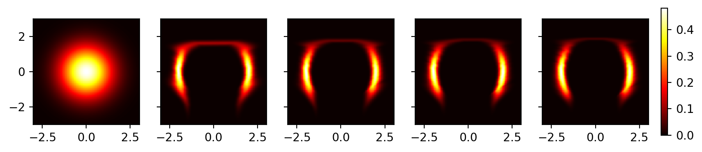
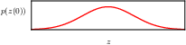

# Import required packages
import torch
import numpy as np
import normflows as nf
from matplotlib import pyplot as plt
from tqdm import tqdm
device = 'cuda'3 Normalizing Flows
GANs are the first major generative modeling architecture we considered, but nowadays it’s no longer widely used. Although the sampling is easy, it usually has no data likelihood, and the training process is often unstable. Normalizing flows, on the contrary, have exact likelihoods we can train on, and the sampling process is also easy (albeit much slower). The exact likelihood is guaranteed by applying some specific constraints on the network architecture (invertibility), which makes the Jacobian determinant between distribution transformations easy to compute. Later, with diffusion models, we’ll relax the architecture constraints a little bit so that the network will no longer be invertible, and we will only be able to train on an approximation of the likelihood. But these relaxations allow for some much more expressive models and better sample quality.
Normalizing flows are called as such because they transform a probability distribution through a sequence of mappings of the same dimensionality (thus it flows), and the inverse mappings transform a complex data distribution into a normalized one, often the normal distribution (thus it normalizes). As we can see, diffusion models also roughly share the same concepts. Recent SOTA generative models are often a mixture of the two.
The general model structure goes as follows. We start with a latent variable \(\mathbf{z}\), distributed according to a simple distribution \(p_{\mathbf{z}}(\mathbf{z})\), a function \(\mathbf{x} = f(\mathbf{z}, \mathbf{w})\) parameterized by a neural network that transforms the latent space into the data space, and its inverse function \(\mathbf{z} = g(\mathbf{x}, \mathbf{w})= g(f(\mathbf{z}, \mathbf{w}), \mathbf{w})\) that transforms the data space back into the latent space. The data likelihood is then given by the change of variables formula:
\[ p_{\mathbf{x}}(\mathbf{x}|\mathbf{w}) = p_{\mathbf{z}}(g(\mathbf{x}, \mathbf{w})) \cdot |\det J(\mathbf{x})| \]
where \(J(\mathbf{x})\) is the Jacobian matrix of partial derivatives whose elements are given by:
\[ J_{ij}(\mathbf{x}) = \frac{\partial g_i(\mathbf{x}, \mathbf{w})}{\partial x_j}. \]
To make sure that transformation is invertible, function \(f\) has to be a one-to-one mapping, this adds some constraints on the architecture of the neural network. Also computing the determinant of the Jacobian matrix can be computationally expensive, so we might impose some further restrictions on the network structure to make it more efficient.
If we consider a training set \(\mathcal{D} = \{\mathbf{x}_1, \ldots, \mathbf{x}_N\}\) of independent data points, the log likelihood function
\[ \ln p(\mathcal{D}|\mathbf{w}) = \sum_{n=1}^N \ln p_{\mathbf{x}}(\mathbf{x}_n|\mathbf{w}) = \sum_{n=1}^N \left[ \ln p_{\mathbf{z}}(g(\mathbf{x}_n, \mathbf{w})) + \ln |\det J(\mathbf{x}_n)| \right] \]
will serve as the objective function to train the neural network. The first term is the log likelihood of the latent variable, the second term is the log determinant of the Jacobian matrix.
To be able to model a wide range of distributions, we want the transformation function \(\mathbf{x} = f(\mathbf{z}, \mathbf{w})\) to be highly flexible, so we use a deep neural network with multiple layers. We can ensure that the overall function is invertible if we make each layer of the network invertible. And the two terms in the data likelihood, the latent variable likelihood and the Jacobian determinant, can both be computed easily under such a layered structure, using the chain rule of calculus.
3.1 coupling flows
Recall that in flow models we aim for the following goals:
- The transformation function \(f\) should be (easily enough) invertible, so that we can compute the latent variable likelihood.
- The Jacobian determinant of the transformation should be easy to compute, so that we can correct the latent likelihood to get the data likelihood.
- We should be able to sample from it. Once the above two are met, this is usually straightforward, although the computation cost might vary.
Each flow model will attempt to meet these goals in different ways. In coupling flows, for each layer of the network, we first split the latent variable \(\mathbf{z}\) into two parts \(\mathbf{z} = (\mathbf{z}_A, \mathbf{z}_B)\), then apply the following transformation:
\[ \begin{align} \mathbf{X}_A &= \mathbf{Z}_A, \\ \mathbf{X}_B &= \exp(s(\mathbf{Z}_A, w)) \odot \mathbf{Z}_B + b(\mathbf{Z}_A, w). \end{align} \]
The frist part \(\mathbf{X}_A\) is simply left unchanged, and all the efforts are put into transforming the second part \(\mathbf{X}_B\). The transformation is done by a neural network with parameters \(w\), which takes \(\mathbf{Z}_A\) as input and outputs two vectors \(s(\mathbf{Z}_A, w)\) and \(b(\mathbf{Z}_A, w)\) of the same dimensionality as \(\mathbf{Z}_B\). Besides, an \(\exp\) function is used to ensure that the Jacobian determinant is easy to compute.
Now let’s check how this formula meets the three aformentioned goals. First is invertability. Simply rearrange the terms and we can get the inverse transformation:
\[ \begin{align} \mathbf{Z}_A &= \mathbf{X}_A, \\ \mathbf{Z}_B &= (\mathbf{X}_B - b(\mathbf{X}_A, w)) \odot \exp(-s(\mathbf{X}_A, w)). \end{align} \]
Notice how the inverse transformation does not involve inverting the neural networks at all, just changing the sign of the \(\exp\) function. This is the key to making the transformation invertible easy and efficient.
Second is computing the Jacobian determinant. It turns out the Jacobian is a lower trianglular matrix
\[ \begin{bmatrix} \mathbf{I} & 0 \\ \frac{\partial \mathbf{Z}_B}{\partial \mathbf{X}_A} & \text{diag}(-\exp(s(\mathbf{Z}_A, w))) \end{bmatrix} \]
and the determinant is simply the product of the diagonal elements.
- \(\mathbf{Z}_A\) is an identity transformation of \(\mathbf{X}_A\), so \(\frac{\partial \mathbf{Z}_A}{\partial \mathbf{X}_A}\) is an identity matrix.
- \(\frac{\partial \mathbf{Z}_A}{\partial \mathbf{X}_B}\) is zero.
- \(\mathbf{Z}_B\) is \(\mathbf{X}_B\) minus a linear transformation of \(\mathbf{X}_A\) (doesn’t involve \(\mathbf{Z}_B\)), then element-wise multiplied by the exponential term (meaning no interaction among \(\mathbf{Z}_B\)), so \(\frac{\partial \mathbf{Z}_B}{\partial \mathbf{X}_B}\) is a diagonal matrix, and the diagonal values are the corresponding negatives of the exponential term. Up to this point we know the Jacobian matrix itselve is a lower triangular matrix.
- \(\frac{\partial \mathbf{Z}_B}{\partial \mathbf{X}_A}\) is more complicated, but it doesn’t factor into the Jacobian determinant so can be safely ignored.
To make the network more expressive, normalizing flows often have multiple coupling layers stacked together, switching the roles of \(\mathbf{Z}_A\) and \(\mathbf{Z}_B\) at each layer, and possibly also changing the split points at each layer. The final data likelihood is the product of the likelihoods at each layer. And the Jacobian determinant is the product of the determinants at each layer.
Third is sampling. Once the model is trained, we can start with \(\mathbf{Z}_A\), and follow the flow till we get to \(\mathbf{X}\). The sampling process is deterministic and easy to compute.
As an example we can train a normalizing flow model on a two-moons dataset, using the normflows package. The following code is adapted from the package’s example code.
This is the target distribution
# Define target distribution
target = nf.distributions.TwoMoons()
# Plot target distribution
grid_size = 200
xx, yy = torch.meshgrid(torch.linspace(-3, 3, grid_size), torch.linspace(-3, 3, grid_size), indexing='xy')
zz = torch.cat([xx.unsqueeze(2), yy.unsqueeze(2)], 2).view(-1, 2)
zz = zz.to(device)
log_prob = target.log_prob(zz).to('cpu').view(*xx.shape)
prob = torch.exp(log_prob)
prob[torch.isnan(prob)] = 0
plt.pcolormesh(xx, yy, prob.data.numpy(), cmap='hot')
plt.gca().set_aspect('equal', 'box')Construct the model. To define a normalizing flow model, we first specify the base distribution and the transformation layers, and then combine them in the NormalizingFlow class.
# Define 2D Gaussian base distribution
base = nf.distributions.base.DiagGaussian(2)
# Define list of flows
num_layers = 2
flows = []
for i in range(num_layers):
# Neural network with two hidden layers having 64 units each
# Last layer is initialized by zeros making training more stable
param_map = nf.nets.MLP([1, 64, 64, 2], init_zeros=True)
# Add flow layer
flows.append(nf.flows.AffineCouplingBlock(param_map))
# Swap dimensions
flows.append(nf.flows.Permute(2, mode='swap'))
model = nf.NormalizingFlow(base, flows)
model = model.to(device)Train the model.
max_iter = 3201
num_samples = 2 ** 9
show_iter = 800
loss_hist = np.array([])
prob_list = []
optimizer = torch.optim.Adam(model.parameters(), lr=5e-4, weight_decay=1e-5)
for it in tqdm(range(max_iter)):
optimizer.zero_grad()
# Get training samples
x = target.sample(num_samples).to(device)
# Compute loss
loss = model.forward_kld(x)
# Do backprop and optimizer step
if ~(torch.isnan(loss) | torch.isinf(loss)):
loss.backward()
optimizer.step()
# Log loss
loss_hist = np.append(loss_hist, loss.to('cpu').data.numpy())
# Save prob for later plotting
if it % show_iter == 0:
model.eval()
log_prob = model.log_prob(zz)
model.train()
prob = torch.exp(log_prob.to('cpu').view(*xx.shape))
prob[torch.isnan(prob)] = 0
prob_list.append(prob.data.numpy())
plt.plot(loss_hist) 0%| | 0/3201 [00:00<?, ?it/s] 0%| | 15/3201 [00:00<00:21, 149.57it/s] 2%|▏ | 64/3201 [00:00<00:09, 348.03it/s] 3%|▎ | 111/3201 [00:00<00:07, 400.08it/s] 5%|▍ | 157/3201 [00:00<00:07, 420.78it/s] 6%|▋ | 202/3201 [00:00<00:06, 430.97it/s] 8%|▊ | 248/3201 [00:00<00:06, 438.31it/s] 9%|▉ | 294/3201 [00:00<00:06, 442.53it/s] 11%|█ | 339/3201 [00:00<00:06, 444.55it/s] 12%|█▏ | 384/3201 [00:00<00:06, 446.14it/s] 13%|█▎ | 430/3201 [00:01<00:06, 448.35it/s] 15%|█▍ | 475/3201 [00:01<00:06, 448.17it/s] 16%|█▌ | 520/3201 [00:01<00:05, 447.81it/s] 18%|█▊ | 566/3201 [00:01<00:05, 448.81it/s] 19%|█▉ | 611/3201 [00:01<00:05, 445.47it/s] 20%|██ | 656/3201 [00:01<00:05, 446.51it/s] 22%|██▏ | 701/3201 [00:01<00:05, 446.64it/s] 23%|██▎ | 746/3201 [00:01<00:05, 446.91it/s] 25%|██▍ | 791/3201 [00:01<00:05, 447.78it/s] 26%|██▌ | 836/3201 [00:01<00:05, 438.08it/s] 28%|██▊ | 881/3201 [00:02<00:05, 441.20it/s] 29%|██▉ | 926/3201 [00:02<00:05, 441.27it/s] 30%|███ | 971/3201 [00:02<00:05, 442.14it/s] 32%|███▏ | 1017/3201 [00:02<00:04, 444.51it/s] 33%|███▎ | 1062/3201 [00:02<00:04, 444.95it/s] 35%|███▍ | 1107/3201 [00:02<00:04, 446.39it/s] 36%|███▌ | 1152/3201 [00:02<00:04, 446.95it/s] 37%|███▋ | 1197/3201 [00:02<00:04, 443.93it/s] 39%|███▉ | 1242/3201 [00:02<00:04, 445.48it/s] 40%|████ | 1287/3201 [00:02<00:04, 445.54it/s] 42%|████▏ | 1332/3201 [00:03<00:04, 446.29it/s] 43%|████▎ | 1377/3201 [00:03<00:04, 445.23it/s] 44%|████▍ | 1422/3201 [00:03<00:04, 444.74it/s] 46%|████▌ | 1467/3201 [00:03<00:03, 446.30it/s] 47%|████▋ | 1512/3201 [00:03<00:03, 446.52it/s] 49%|████▊ | 1557/3201 [00:03<00:03, 446.73it/s] 50%|█████ | 1602/3201 [00:03<00:03, 444.11it/s] 51%|█████▏ | 1647/3201 [00:03<00:03, 441.48it/s] 53%|█████▎ | 1692/3201 [00:03<00:03, 443.78it/s] 54%|█████▍ | 1737/3201 [00:03<00:03, 445.33it/s] 56%|█████▌ | 1782/3201 [00:04<00:03, 445.83it/s] 57%|█████▋ | 1828/3201 [00:04<00:03, 447.55it/s] 59%|█████▊ | 1873/3201 [00:04<00:02, 447.12it/s] 60%|█████▉ | 1918/3201 [00:04<00:02, 447.26it/s] 61%|██████▏ | 1963/3201 [00:04<00:02, 447.33it/s] 63%|██████▎ | 2008/3201 [00:04<00:02, 447.37it/s] 64%|██████▍ | 2053/3201 [00:04<00:02, 447.26it/s] 66%|██████▌ | 2098/3201 [00:04<00:02, 447.30it/s] 67%|██████▋ | 2143/3201 [00:04<00:02, 447.96it/s] 68%|██████▊ | 2188/3201 [00:04<00:02, 448.04it/s] 70%|██████▉ | 2234/3201 [00:05<00:02, 448.40it/s] 71%|███████ | 2279/3201 [00:05<00:02, 447.09it/s] 73%|███████▎ | 2324/3201 [00:05<00:01, 446.44it/s] 74%|███████▍ | 2370/3201 [00:05<00:01, 447.81it/s] 75%|███████▌ | 2415/3201 [00:05<00:01, 444.66it/s] 77%|███████▋ | 2461/3201 [00:05<00:01, 447.19it/s] 78%|███████▊ | 2506/3201 [00:05<00:01, 445.27it/s] 80%|███████▉ | 2551/3201 [00:05<00:01, 445.60it/s] 81%|████████ | 2596/3201 [00:05<00:01, 446.04it/s] 83%|████████▎ | 2642/3201 [00:05<00:01, 446.93it/s] 84%|████████▍ | 2687/3201 [00:06<00:01, 444.15it/s] 85%|████████▌ | 2732/3201 [00:06<00:01, 444.66it/s] 87%|████████▋ | 2777/3201 [00:06<00:00, 445.03it/s] 88%|████████▊ | 2822/3201 [00:06<00:00, 445.70it/s] 90%|████████▉ | 2867/3201 [00:06<00:00, 446.12it/s] 91%|█████████ | 2912/3201 [00:06<00:00, 446.45it/s] 92%|█████████▏| 2957/3201 [00:06<00:00, 440.97it/s] 94%|█████████▍| 3002/3201 [00:06<00:00, 442.14it/s] 95%|█████████▌| 3047/3201 [00:06<00:00, 442.77it/s] 97%|█████████▋| 3092/3201 [00:06<00:00, 444.39it/s] 98%|█████████▊| 3137/3201 [00:07<00:00, 445.22it/s] 99%|█████████▉| 3182/3201 [00:07<00:00, 445.20it/s]100%|██████████| 3201/3201 [00:07<00:00, 442.53it/s]
Plot the results. We can see that the model has (roughly) learned the distribution of the two moons dataset.
fig, axes = plt.subplots(1, len(prob_list), figsize=(10, 2), sharey=True)
for i, prob in enumerate(prob_list):
ax = axes[i]
c = ax.pcolormesh(xx, yy, prob, cmap='hot')
ax.set_aspect('equal', 'box')
# Adjust the colorbar to have more padding
cbar = fig.colorbar(c, ax=axes, orientation='vertical', fraction=0.02, pad=0.02)
3.2 autoregressive flows
3.3 continuous flows
In normalizing flow models, for each transformation layer, the input and output always have the same dimensionality, we are thus looking for a more meaningful representation of the same data space. There is another neural network sharing this property, namely residual networks, but there is no guarantee that such a network will be invertible. Here we introduce a well known mathematical concept, the differential equation, into the neural network, and thus satisfying both the invertibility and the constant dimensionality requirements.
3.3.1 neural differential equation
Neural differential equation, as the name implies, is a neural network that is defined by a differential equation. We can consider the residual network as a discrete version of the differential equation, since the “residual” is already a difference between consecutive layers, and the differential is the limit of this difference as it approaches zero. Thus starting from a residual network
\[ \mathbf{z}_{t+1} = \mathbf{z}_t + f(\mathbf{z}_t, \mathbf{w}) \]
we can readily convert it into a differential equation
\[ \frac{d\mathbf{z(t)}}{dt} = f(\mathbf{z(t)}, \mathbf{w}). \]
Now defining something is easy, what really matters is what we can do with it. On the modeling side, starting from an initial state \(\mathbf{z}_0\), we no longer need to define the number of layers in the network. we can integrate the differential equation to get the state at any time \(t\),
3.3.2 neural ODE backpropagation
3.3.3 neural ODE flows
